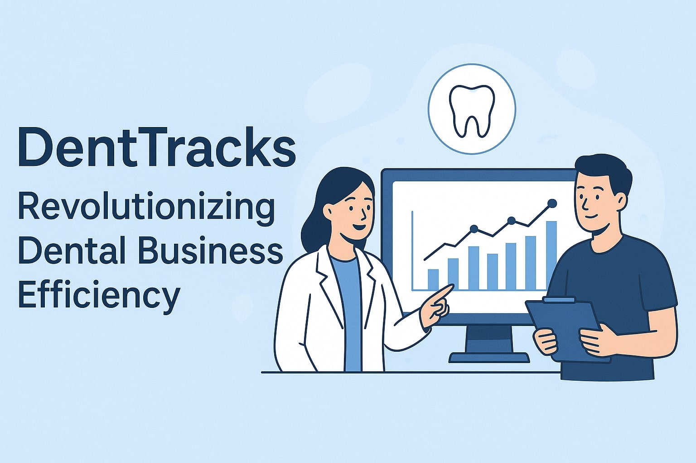

DentTracks: Revolutionizing Dental Business Efficiency
Running a dental business today is about more than great dentistry; it’s about managing operations that run like clockwork. From scheduling appointments and tracking treatments to monitoring staff performance and ensuring compliance, the administrative load can easily take focus away from patient care. That is where DentTracks steps in, an all-in-one dental business management platform designed to make running a dental business Easy, Effective, and Efficient (EEE).
A Smarter Way to Run Your Dental Business
DentTracks streamlines every aspect of daily operations through intelligent automation. Its user-friendly interface enables dental businesses to handle scheduling, billing, patient communication, and treatment tracking, all from one centralized dashboard. By eliminating redundant manual tasks, dental professionals can dedicate more time to what truly matters: delivering excellent patient care.
Key modules include:
- Smart Scheduling: Automated appointment booking and reminders reduce no-shows and optimize chair time.
- Treatment Tracking: Real-time visibility into ongoing and completed treatments ensures precision and accountability.
- Data Analytics: Actionable insights help dental businesses identify growth opportunities, track performance, and make informed decisions.
- Staff Incentive Automation: Customizable incentive systems motivate team members while aligning their goals with overall business growth.
- Compliance and Quality Control: Built-in checks ensure adherence to industry standards, minimizing risks and maintaining patient trust.
Built by Dentists, for Dental Businesses
What truly differentiates DentTracks from other management tools is the deep, hands-on industry expertise behind it. The platform is developed by a leadership team of seasoned dental professionals, technology innovators, and business strategists who understand the daily challenges faced by modern dental businesses. Every feature reflects practical insights drawn from years of real-world experience.
Results That Matter
Dental businesses using DentTracks report measurable improvements across key performance areas:
- Reduced operational costs through workflow automation.
- Increased profitability through optimized scheduling and financial tracking.
- Enhanced staff performance through transparent KPIs and incentives.
- Better patient engagement with personalized communication and smoother operations.
By bridging technology and dentistry, DentTracks does not just simplify management; it transforms it.
The Future of Dental Business Management
In an era where efficiency drives success, DentTracks empowers dental businesses to evolve into high-performing, growth-oriented enterprises. Whether you are an independent dental entrepreneur or managing multiple locations, DentTracks gives you the control, clarity, and confidence to scale effectively.